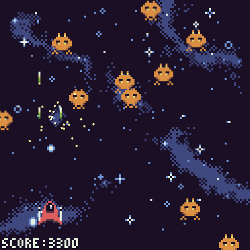
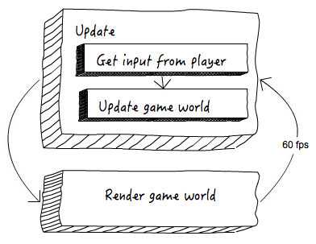
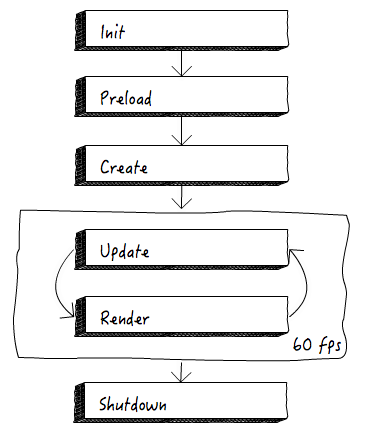
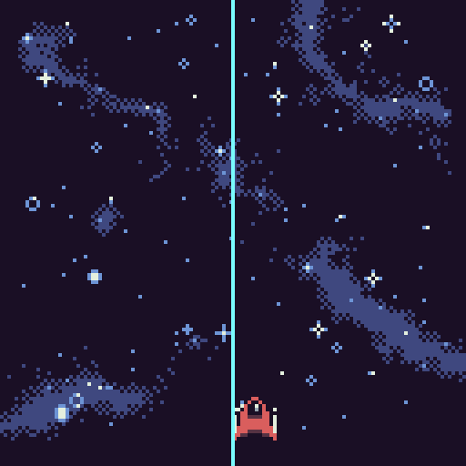
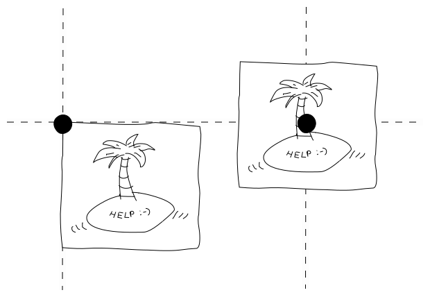
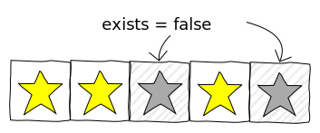
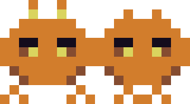
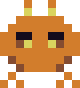

Let's make a game with JavaScript!
Belén Albeza
Games on the Web
HTML5 allows us to make games for the Web.
- 2D and 3D drawing API's (Canvas and WebGL)
- Powerful audio API (Web Audio)
- Multiple input sources: keyboard, mouse, touch screens, gamepads…
- Lots of tools, libraries, etc. available!
Phaser
- Very powerful 2D game framework
- Not tied to a specific genre
- Open-source
- phaser.io
Let's make a game!
A space shoot'em up

Step 1: Init Phaser
Goals:
- Create a drawing context (
<canvas>). - Setup the game loop.
In our index.html:
<body>
<div id="game"></div>
</body>Instantiate Phaser.Game:
window.onload = function() {
new Phaser.Game(512, 512, Phaser.AUTO, 'game');
};- This attaches a
<canvas>to#game - We can choose between
Phaser.CANVAS,Phaser.WEBGLor WebGL with a Canvas fallback (Phaser.AUTO)
The game loop

Setup the game loop:
PlayState = {};
PlayState.preload = function () {};
PlayState.create = function () {};
window.onload = function () {
new Phaser.Game(512, 512, Phaser.AUTO, 'game', PlayState);
};There are more phases! init, update, etc.
Step 2: Draw the background
Goals:
- Load an image asset
- Render the image
Load the image asset and assign a key to it:
PlayState.preload = function () {};
PlayState.preload = function () {
this.game.load.image('background', 'assets/background.png');
}- This assumes images are stored in a
assetsfolder. - States keep a reference to the game (
this.game)
Now add a Phaser.Image to the game world
PlayState.create = function () {};
PlayState.create = function () {
this.game.add.image(0, 0, 'background');
}this.game.addis a factory to create game entities
How does it work?
- Phaser is smart enough to update and render game entities each frame
- Game entities include: images, sprites, text, particles, etc.
Step 3: Create the ship sprite
Goals:
- Create a sprite to handle the player's ship
- Move this sprite
Load the ship asset image and make a sprite with it:
PlayState.preload = function () {
// ...
this.game.load.image('ship', 'assets/ship.png');
};
PlayState.create = function (){
// ...
this.ship = this.game.add.sprite(256, 436, 'ship');
};Problem: the ship is not totally centered horizontally

Solution: anchor points

Tweak the anchor in the sprite:
this.ship = this.game.add.sprite(256, 436, 'ship');
this.ship.anchor.setTo(0.5);Let's move the sprite
- We can easily move the sprite using Phaser's built-in physics engine.
- Since physics are costly, we need to manually enable them in our entities
- Once enabled, sprites have a
bodyproperty we can tweak
For now, we'll just make it move automatically to the right…
this.ship = this.game.add.sprite(256, 436, 'ship');
this.ship.anchor.setTo(0.5);
// setup physics for the ship sprite
this.game.physics.arcade.enable(this.ship);
this.ship.body.velocity.x = 100;Step 4: Use custom sprites
Why?
- Using
Phaser.Spriteis OK for sprites with almost no behavior… - We might want own classes and methods, so we can have things like
ship.shoot()
Goal: use a custom class for the ship sprite.
We need to inherit from Phaser.Sprite:
function Ship(game, x, y) {
// call Phaser.Sprite parent constructor
Phaser.Sprite.call(this, game, x, y, 'ship');
// custom init code here…
}
// inherit from Phaser.Sprite
Ship.prototype = Object.create(Phaser.Sprite.prototype);
Ship.prototype.constructor = Ship;In ES6 is easier :)
Move our anchor and physics tweaks to the constructor:
function Ship(game, x, y) {
Phaser.Sprite.call(this, game, x, y, 'ship');
this.anchor.setTo(0.5);
this.game.physics.arcade.enable(this);
this.body.velocity.x = 100;
}
PlayState.create = function () {
// ...
this.ship.anchor.setTo(0.5);
this.game.physics.arcade.enable(this.ship);
this.ship.body.velocity.x = 100;
};Finally, instantiate Ship instead of using a regular sprite:
PlayState.create = function () {
// ...
this.ship = this.game.add.sprite(256, 436, 'ship');
this.ship = new Ship(this.game, 256, 436);
this.game.add.existing(this.ship);
};game.add.existing adds a custom entity to the world.
Step 5: Keyboard input
Goals:
- Get the player's input from the keyboard.
- Move the ship left and right with the arrow keys.
- Make the ship shoot with the spacebar
Phaser's keyboard model:
- Map physical keys to instances of
Phaser.Key - You can query the status of a key (ex:
.isDown)… - …or subscribe to events (ex:
.onUp)
Create and store Phaser.Key instances:
PlayState.create = function () {
// register keys
this.keys = this.game.input.keyboard.addKeys({
left: Phaser.KeyCode.LEFT,
right: Phaser.KeyCode.RIGHT,
space: Phaser.KeyCode.SPACEBAR
});
// ...
};Add relevant methods to Ship:
Ship.prototype.move = function (dir) {
this.body.velocity.x = 400 * dir;
};
Ship.prototype.shoot = function () {
console.log('Payun!'); // TODO: implement
};Subscribe to
PlayState.create = function () {
// ...
this.keys.space.onDown.add(function () {
this.ship.shoot();
}, this);
};Moving the ship is a bit different:
- We want to move as long as a key is being pressed
- Keyboard events are not handy
- We need to check the status of the keys every frame
We use the update phase in our game state to do things every frame.
Our brand new update method:
PlayState.update = function () {
if (this.keys.left.isDown) { // move left
this.ship.move(-1);
}
else if (this.keys.right.isDown) { // move right
this.ship.move(1);
}
else { // stop
this.ship.move(0);
}
};Step 6: Shooting bullets
Goals:
- Create a bullet sprite that goes upwards
- Make the ship spawn bullets
- Destroy bullets when they go out of the screen
Load the image for the bullets as usual:
PlayState.preload = function () {
// ...
this.game.load.image('ship', 'assets/bullet.png');
};
The bullet sprite:
function Bullet(game, x, y) {
Phaser.Sprite.call(this, game, x, y, 'bullet');
}
Bullet.prototype = Object.create(Phaser.Sprite.prototype);
Bullet.prototype.constructor = Bullet;function Bullet(game, x, y) {
Phaser.Sprite.call(this, game, x, y, 'bullet');
this.anchor.setTo(0.5, 1); // handle from the bottom
this.game.physics.arcade.enable(this);
this.body.velocity.y = -400;
}
Bullet.prototype = Object.create(Phaser.Sprite.prototype);
Bullet.prototype.constructor = Bullet;Update the
Ship.prototype.shoot = function () {
console.log('Payun!');
let y = this.y - 12; // vertical offset for bullets
const HALF = 22; // half the space between the cannons
this.game.add.existing(new Bullet(this.game, this.x + HALF, y));
this.game.add.existing(new Bullet(this.game, this.x - HALF, y));
};Destroy the bullet when it disappears:
Bullet.prototype.update = function () {
if (this.y < 0) {
this.destroy();
}
};Phaser will automatically call Bullet.update every frame.
Step 7: Sprite pooling
We've got a problem:
- We are creating and destroying bullets frequently
- This is expensive
Solution? Use a pool (Phaser.Group)to recycle sprites.
How to recycle

- Sprites stay in the game tree with a flag that marks them as "zombies".
- Next time a sprite needs to be created, it looks for a free spot at the pool first.
Create the pool for the bullets:
PlayState.create = function () {
// ...
this.bullets = this.game.add.group();
};
A new spawn method:
Bullet.spawn = function (group, x, y) {
let bullet = group.getFirstExists(false);
if (bullet === null) {
bullet = new Bullet(group.game, x, y);
group.add(bullet);
}
else {
bullet.reset(x, y);
}
};Override Bullet.reset (it's an inherited method)
Bullet.prototype.reset = function (x, y) {
Phaser.Sprite.prototype.reset.call(this, x, y);
this.body.velocity.y = -400;
};Use the new spawn method to pool the bullets:
Ship.prototype.shoot = function (group) {
let y = this.y - 12;
const HALF = 22;
this.game.add.existing(new Bullet(this.game, this.x + HALF, y));
this.game.add.existing(new Bullet(this.game, this.x - HALF, y));
};Ship.prototype.shoot = function () {
let y = this.y - 12;
const HALF = 22;
this.game.add.existing(new Bullet(this.game, this.x + HALF, y));
this.game.add.existing(new Bullet(this.game, this.x - HALF, y));
};Ship.prototype.shoot = function (group) {
let y = this.y - 12;
const HALF = 22;
Bullet.spawn(group, this.x + HALF, y);
Bullet.spawn(group, this.x - HALF, y);
};Update the key callback to pass the pool:
this.keys.space.onDown.add(function () {
this.ship.shoot(this.bullets);
}, this);Change destroy for kill so sprites are not released:
Bullet.update = function () {
if (this.y < 0) {
this.destroy();
this.kill();
}
};kill() sets exists to false.
Step 8: Animated aliens
Goals:
- Create a new
Aliensprite - Animate the aliens with keyframes of a spritesheet.
 → 
Load the spritesheet asset:
PlayState.preload = function () {
// ...
this.game.load.spritesheet('alien', 'assets/alien.png', 40, 44);
};We need to pass along the width and the height of each frame.
The Alien sprite:
function Alien(game, x, y) {
Phaser.Sprite.call(this, game, x, y, 'alien');
this.anchor.setTo(0.5);
this.game.physics.enable(this);
}
Alien.prototype = Object.create(Phaser.Sprite.prototype);
Alien.prototype.constructor = Alien;function Alien(game, x, y) {
Phaser.Sprite.call(this, game, x, y, 'alien');
this.anchor.setTo(0.5);
this.game.physics.enable(this);
// add animation and give it a name
this.animations.add('fly', [0, 1]);
// play at 2fps, looped
this.animations.play('fly', 2, true);
}Let's try it by creating a single alien:
PlayState.create = function () {
// ...
// add sample alien
this.game.add.existing(new Alien(this.game, 50, 50));
};Step 9: Enemy waves
Goals:
- Spawn aliens using a sprite pool
- Give the aliens a random speed
This is almost identical to what we did with Bullet.
Create a Phaser.Group to act as a pool:
PlayState.create = function () {
// ...
this.aliens = this.game.add.group();
};Add a spawn method to Alien.
Alien.spawn = function (group, x, y) {
// ...
// this is identical to Bullet.spawn
};
We already know how to do this.
This is also a good opportunity to refactor.
Override reset and set random speeds:
Alien.prototype.reset = function (x, y) {
Phaser.Sprite.prototype.reset.call(this, x, y);
// set random horizontal and vertical speed for the alien
this.body.velocity.y = this.game.rnd.between(100, 400);
this.body.velocity.x = this.game.rnd.between(-100, 100);
};game.rnd is Phaser's random number generator.
Call reset from the constructor to set a random speed initially too:
function Alien(game, x, y) {
// ...
this.reset(x, y);
}This is a way to reuse code.
Destroy the aliens once they are out of screen:
Alien.prototype.update = function () {
if (this.y > this.game.world.height + this.height) {
this.kill();
}
};Randomly spawn aliens!
PlayState.update = function () {
// ...
// randomly spawn new aliens (10% chance every frame)
if (this.game.rnd.between(0, 100) < 10) {
let x = this.game.rnd.between(0, this.game.world.width);
Alien.spawn(this.aliens, x, -50);
}
};Step 10: collision detection
Goals:
- Kill the aliens when the bullets touch them
BBox collision detection

- Simple, very fast intersections between rectangles and circles.
- Phaser's Arcade physics engine already implements this for us.
Use overlap() to detect collisions between sprites:
PlayState.update = function () {
// ...
this.game.physics.arcade.overlap(
this.bullets,
this.aliens,
function (bullet, alien) {
bullet.kill();
alien.kill();
}
);
};Music & sound
Goals:
- Incorporate SFX for actions in our game
- Play background music
Audio is crucial for a game. More important than graphics.
Audio in Phaser
- Loading of assets like images, spritesheets, etc.
- Songs, SFX, etc. are game entities:
Phaser.Sound- but obviously they don't get "rendered"!
- If you need compressed assets, provide both OGG and MP3.
Load our audio assets in preload, as usual:
PlayState.preload = function () {
// ...
this.game.load.audio('music',
['assets/bgm.ogg', 'assets/bgm.mp3']);
this.game.load.audio('shoot', 'assets/shoot.wav');
this.game.load.audio('boom', 'assets/boom.wav');
};If we provide an array of files, Phaser will use whatever the browser is able to play.
Add audio entities (Phaser.Sound) to the game world:
PlayState.create = function () {
this.audio = {
music: this.game.add.audio('music'),
shoot: this.game.add.audio('shoot'),
explosion: this.game.add.audio('boom')
};
// ...
};Play the background music song:
PlayState.create = function () {
this.audio = {
music: this.game.add.audio('music'),
shoot: this.game.add.audio('shoot'),
explosion: this.game.add.audio('boom')
};
this.audio.music.loopFull();
};loopFull() will countinously loop the song.
Play SFX for shots:
PlayState.create = function () {
// ...
this.keys.space.onDown.add(function () {
this.ship.shoot(this.bullets);
this.audio.shoot.play();
}, this);
};play() will play the audio once.
Play SFX for explosions:
PlayState.update = function () {
// ...
this.game.physics.arcade.overlap(
this.bullets,
this.aliens,
function (bullet, alien) {
bullet.kill();
alien.kill();
this.audio.explosion.play();
},
null, this);
};We can pass our own this to overlap.
Finished!
Want more?
Check out the next steps at:
https://belen-albeza.github.io/html5-games-101/game/